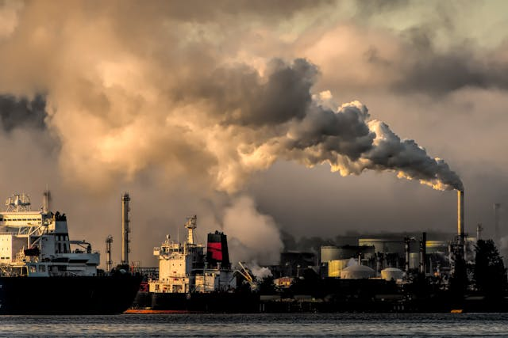
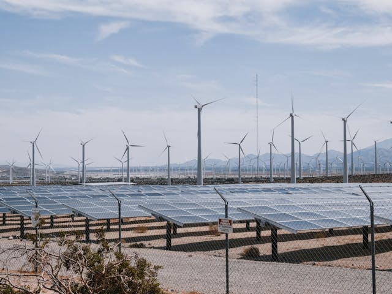
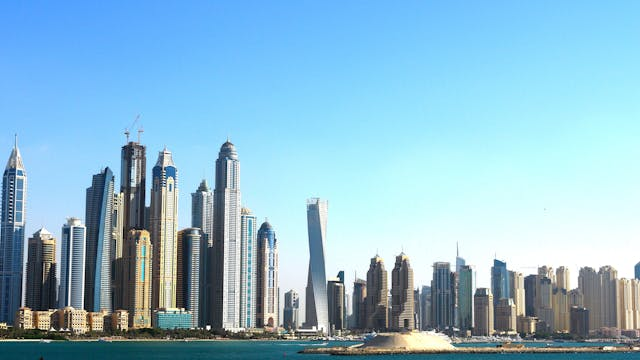
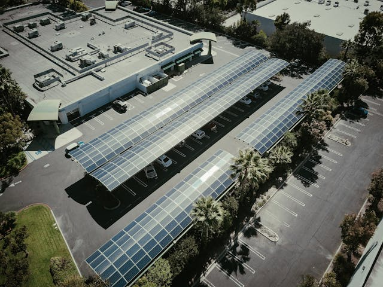
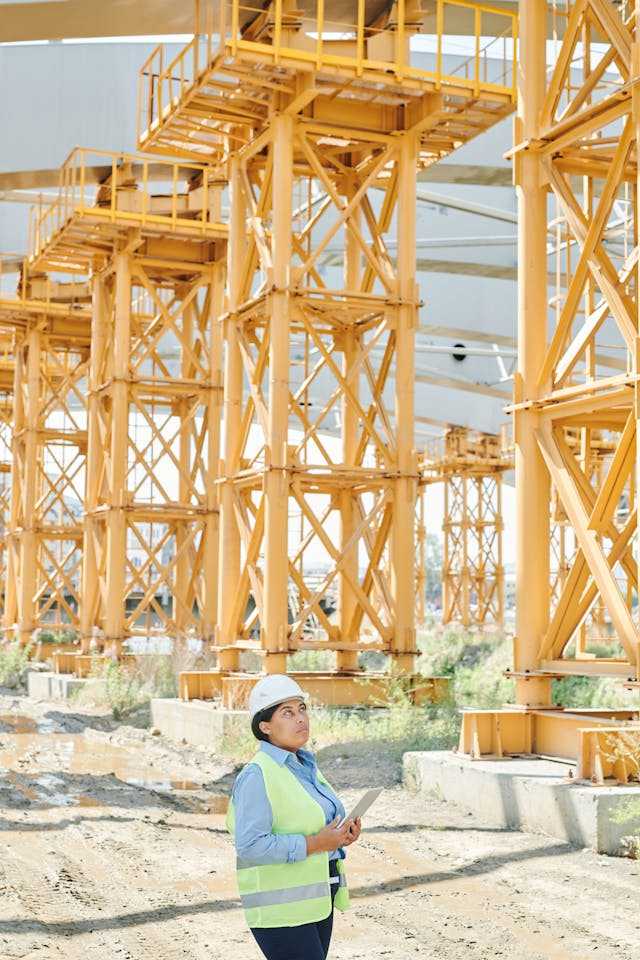
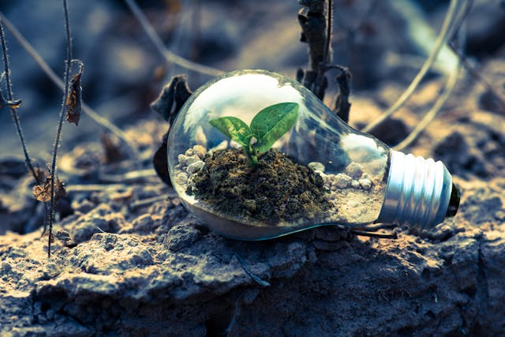

Enfrentamos uma crise energética global e um aumento das emissões de carbono.
Os métodos tradicionais de geração de energia estão esgotando nossos recursos naturais e prejudicando o meio ambiente.
Utilizamos placas solares flutuantes que captam energia solar diretamente dos oceanos.
Nossas turbinas eólicas são projetadas para maximizar a eficiência, aproveitando os ventos marítimos constantes.
Nosso objetivo é reduzir as emissões de carbono significativamente.
Queremos proporcionar uma fonte de energia limpa e sustentável para comunidades ao redor do mundo.
Comunidades costeiras, empresas e indústrias que buscam soluções energéticas sustentáveis.
Os consumidores que desejam reduzir sua pegada de carbono.
Energia limpa e renovável que não esgota os recursos naturais.
Criação de empregos verdes e fortalecimento da economia local.
Nossa solução proporciona energia acessível e confiável todos os dias.
Facilita a transição para um estilo de vida sustentável e consciente.
